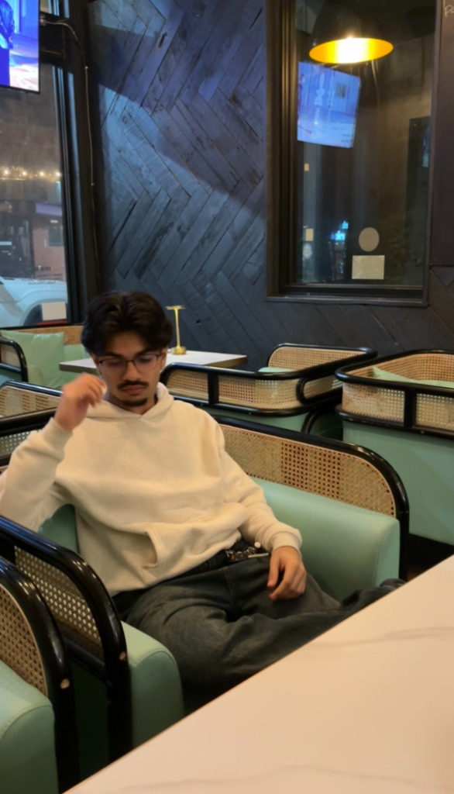
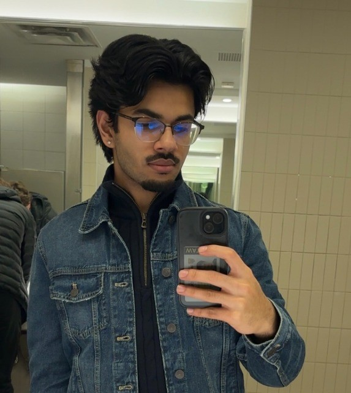
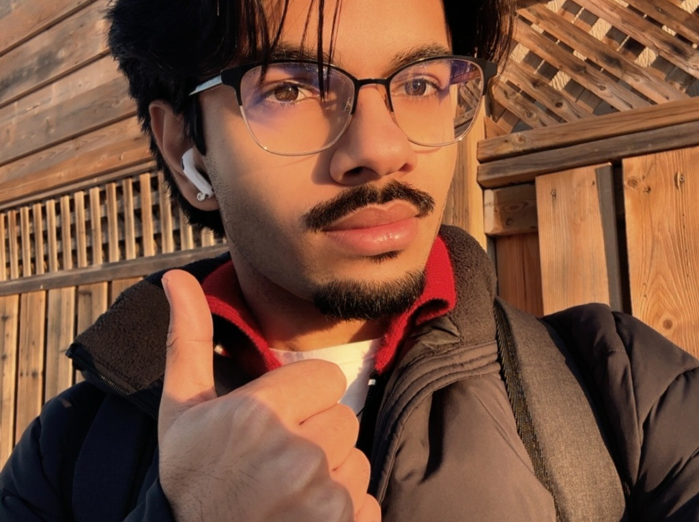
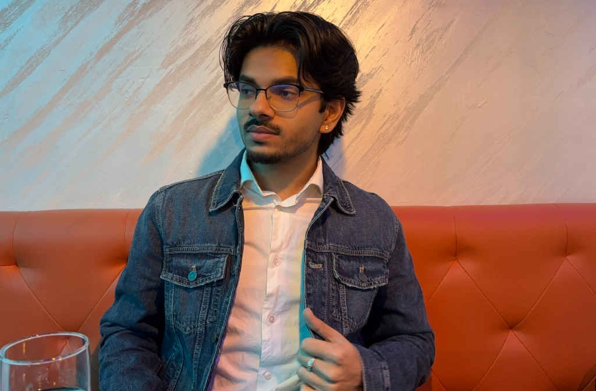
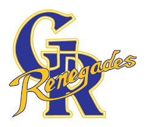
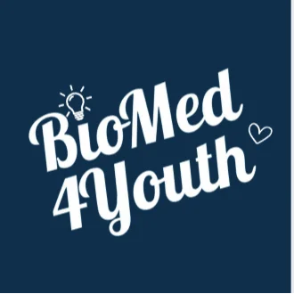
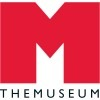
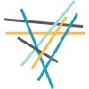
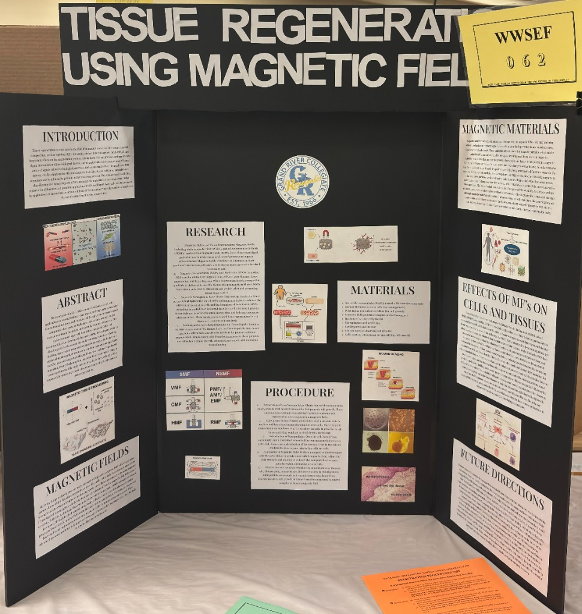

Vaidik
Shingala
Hey! I'm pursuing a BSC in
Biomedical
Sciences
at the University of Waterloo. I'm passionate about healthcare systems, Neurology, and bringing new Drug Delivery ideas to life through impactful real-world applications.
About Me
I am a Biomedical Sciences student at the University of Waterloo focused on pursuing a career in
medicine and advancing patient centered care through science and innovation. I am passionate
about understanding how scientific discoveries translate into real clinical impacts, especially
in areas like Tissue Regeneration and emerging medical technologies. I have explored this
through science fair research on Tissue Regeneration and Drug Delivery Systems, strong
performance in national chemistry competitions, and consistent involvement in mentorship and
teaching roles.
Beyond academics, I invest in community leadership. I coach soccer to little kids, volunteer in
STEAM environments, and bring people together by language and culture. I value discipline,
communication, and empathy, and I carry these into every environment I'm a part of. At my core,
I'm driven by curiousity, growth, and service. I am always looking for ways to learn deeply,
contribute meaningfully, and make a lasting impact in healthcare.



Education
University of Waterloo
Bachelor of Science, Biomedical Sciences

Grand River Collegiate Institute
Ontario Secondary School Diploma
Experience

Outreach Intern
Student Led Club That Works Globally
We as Outreach Interns support BioMed4Youth’s presence across schools, nonprofits, and biomedical spaces. We help execute everything listed above — from service events and fundraisers to partnerships and local outreach campaigns — while gaining valuable leadership and communication experience along the way.
SLIMM: Student-Led Innovations in Medical Microrobotics
University of Waterloo
SLIMM (Student-Led Innovations in Medical Microrobotics), an interdisciplinary research initiative focused on advancing biomedical applications of wireless micro scale robotic systems. Engaged in exploring high impact healthcare applications, including targeted drug delivery, minimally invasive interventions, and precision diagnostics. Contributing to early stage concept development, experimental design, and literature-driven research aligned with emerging advancements in Biomedical Engineering and Microrobotics. Collaborating within a research focused team to investigate and prototype novel solutions, with exposure to modelling, system design, and lab based methodologies under academic mentorship.
Soccer Coach
Summer FC
I coached soccer to toddlers aged 3-5 weekly during the summer break. My coaching partner and I arranged different sets of practices, drills, and mini-games every week and checked in on them to ensure they had their best time with us and learned something effective.
Co-Teacher
International Language Programs (ILP)
I volunteer at the Gujarati school, assisting in teaching Grade 6-8 students by helping with class activities and providing support to enhance their learning. I also engage with students to ensure they stay focused and understand the material effectively.

Underground Studio Maker
THEMUSEUM
Provided guidance to children and youth in their STEAM (Science, Technology, Engineering, Art, and Math) projects. Actively worked as a mentor and with a tutor to organize activities that develop children's growth. Redirected students to encourage safe and positive behaviors (Physically and verbally).

Youth Navigator
Volunteer Waterloo Region
Learned about Health, Equity and Belonging and shared our opinions about those categories, as well as participating in group conversations and minds-on activities.
Skills
Projects

Tissue Regeneration Using Magnetic Fields
My project explores a potential method to accelerate tissue regeneration using iron oxide nanoparticles coated with bioactive molecules. These particles are designed to promote cell growth and healing when guided to a wound site using an external magnetic field. The idea is that once inside the body, the particles would be directed to the injured area, where they could release growth-promoting compounds to speed up tissue repair.